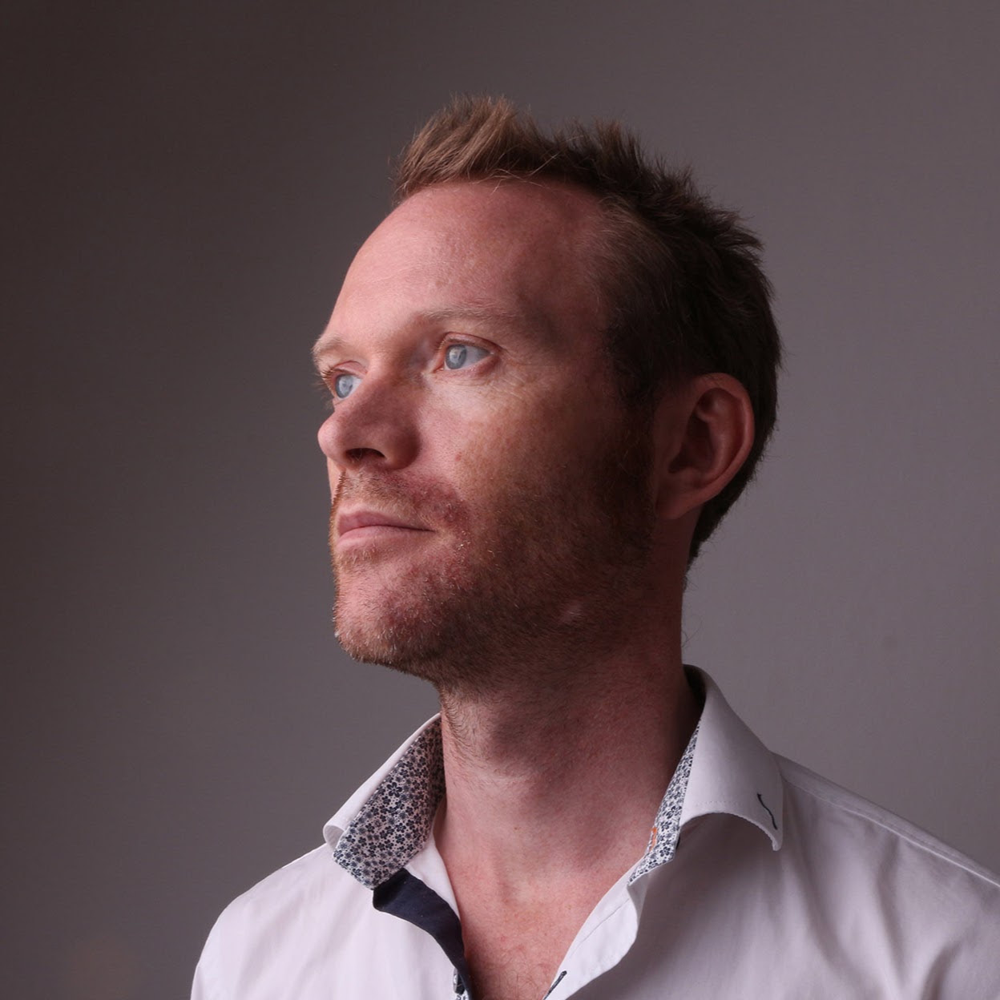
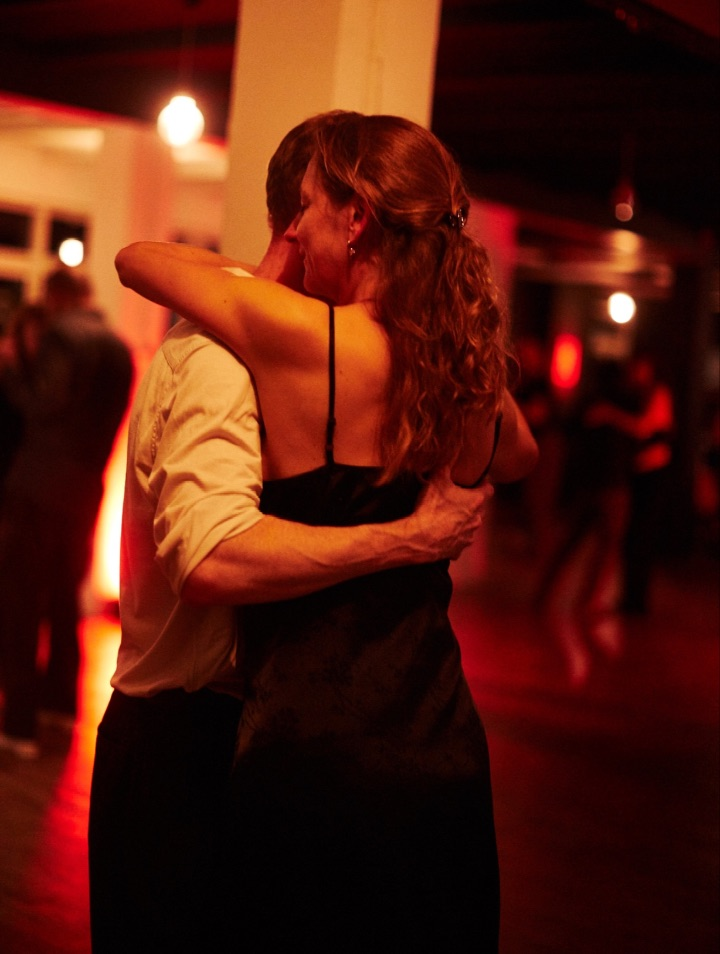

Mads Tuxen
Born 1972. Master in Film Science from Copenhagen University.
I have been working with 3D since year 2000 with productions ranging from Hollywood blockbusters to flying logos. Starting out as a generalist I expanded my expertise into VFX and TD and today I am supervising, art directing and production managing. I know every step of the pipeline from the on-set-supervision to tracking, rigging, scripting, shading, modelling and rendering, all from my own hands-on experience. I appreciate producing for a pipeline and to deliver on time, while keeping everybody happy in the process. I see the work through from previz to grading and mastering. Having deep knowledge into every step of the way, from the artistic spot-on to the technical understanding, I have the best opportunity to work flexibly and efficiently. I make use of this overview when deciding where to put the money to get the most bang for the buck. I enjoy cooperating with big clients. So far Tencent, Lucas Film, Disney and LEGO. Additionally I enjoy working closely with directors, designers and the production in order to make ends meet on all levels. I have for the past 8 years had the pleasure to work with vendors in Shenzhen in the south of China, and Dalian in the north of China, Kuala Lumpur in Malaysia, Jakarta in Indonesia and Saigon in Vietnam. In between TV Shows I have had the pleasure of helping out finishing the animated feature film "The Incredible Story of the Giant Pear" as Compositing Supervisor and 2 shorts as lineproducer for WilFilm, as well as stepping in as production manager on the feature "Allan den menneskelige antenne". Lately i have been working on an animated TV-series "The adventure of little penguin" together with Producer Søren Fleng and Director Peter Hausner for Luce-Creative and Tencent happy to be working again with Kuala Lumpur Malaysia and Jakarta Indonesia. I finished up my work on an upcomming Feature film "Fleak", together wit producer Antti Haikala and Director Jens Møller, a collaboration including France, Poland, Malaysia, Finland and some freelancers from all over the world.
I have been closely involved in developing several pitches With Wilfilm and Man Of Action, and im am working on two of my own pitches, one together with Producer Irene Sparre, Sparre Productions, and Director Mikisoq Lynge.
When im not working I love to dance Argentine Tango - both at home in Copenhagen but also abroad in the countries that I visit. If there is any time left, I dig into painting, Bonsai, repairing Gameboys, photography and reading.
